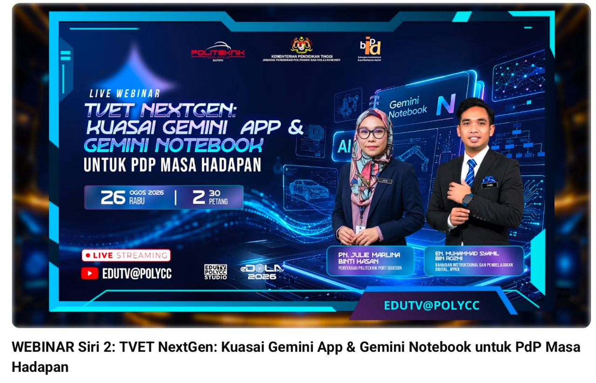

The invitation

Bahagian Instruksional dan Pembelajaran Digital (BIPD), JPPKK appointed me as a panel speaker for the POLYCC Future-Ready AI Series: Digital Intelligence and AI Skills. Session 2, TVET NextGen: Kuasai Gemini App & Gemini Notebook untuk PdP Masa Hadapan, was delivered on 26 August 2026 from Politeknik Banting Selangor and streamed through EDUTV@POLYCC.
From ideas to practice
I structured the sharing around a Gemini Notebook Learning Kit Challenge. Lecturers started by connecting their existing teaching needs to AI, then explored a notebook grounded in their own course sources.
The hands-on portion used course materials to produce learning outputs, while the final check asked lecturers to review source accuracy, citations, learning outcome alignment, language and privacy before classroom use.
Shared live

The session was broadcast live from 2.30 to 4.30 pm and remains available as a recording. A screenshot in the programme report showed 96 concurrent viewers about 32 minutes into the stream; this is a momentary viewing figure, not a total audience or a learning impact measure.
I presented the process of creating teaching and learning materials with Gemini App and Gemini Notebook, supported by an interactive web app kit. The kit lets educators revisit the process after the broadcast. Participant feedback analysis remains separate from this event record.
What I learned
Reusable materials extend the life of a sharing session.
Watch. Try. Review.
Follow the recording, open the learning kit and review the documents supporting this sharing story.